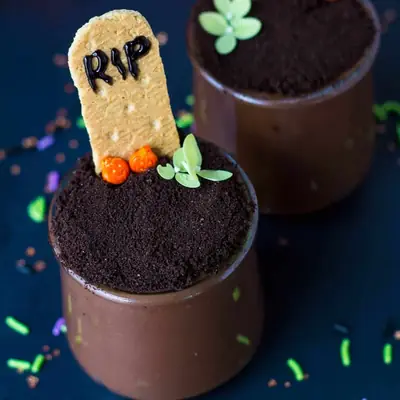

Vegan Graveyard Pudding Cups

Ingredients
- 1/2 cup corn starch
- 1/4 cup water
- 4 1/2 cups unsweetened soy milk
- 1 tsp vanilla extract
- 3/4 cup raw sugar
- 3/4 cup cacao powder
- 2 vegan graham crackers (broken into quarters)
- black decorating gel (or dairy free chocolate melted)
- 12 Oreo cookies
Steps
- Whisk together the cornstarch and water to form a paste in a small bowl.
- In a large saucepan over medium heat, combine the cornstarch slurry, soy milk, vanilla extract, sugar, and cacao powder. Stir consistently until it comes to a boil.
- Reduce the heat and continue to cook and stir until the pudding thickens.
- Remove the pan from the heat. Pudding will continue to thicken as it cools. Allow it to cool to room temperature for 5 minutes, then place it in the refrigerator to cool completely.
- While the pudding is cooling, remove the cream filling from the chocolate Oreo cookies. Place it in the food processor and pulse until crumbly.
- Break each large vegan graham crackers into four separate pieces. Shave off the top using a butter knife to round the edges. With a black gel decorating pen, carefully write the letters RIP, or whatever other message you like.
- Once the pudding has cooled, transfer it to individual cups or jars. Top it with the chocolate cookie dirt, graham cracker tombstone, and any other additional decorations you'd like.
Recipe by Anjali Shah, from The Picky Eater. Saved here for personal use; the original has the full notes, tips and photos. Open original